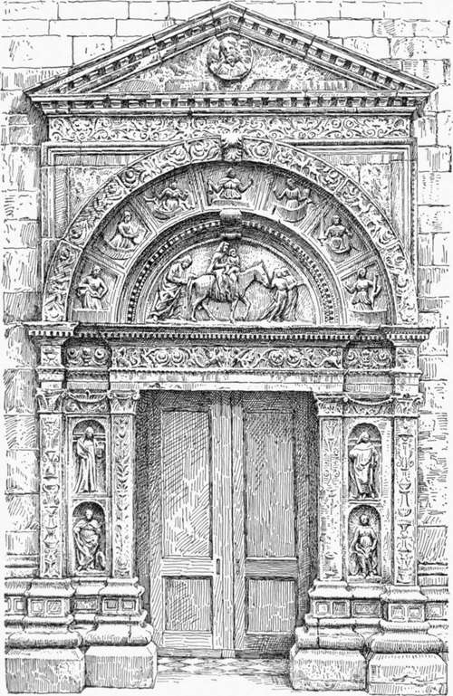
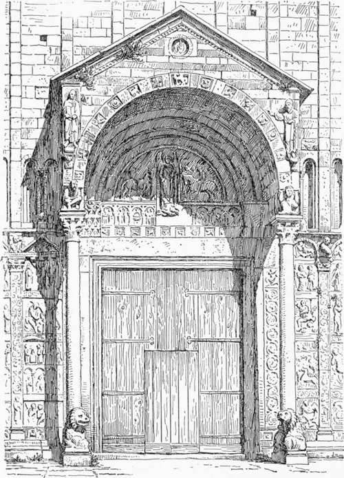
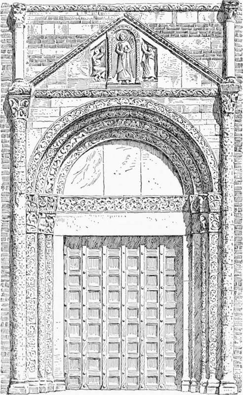
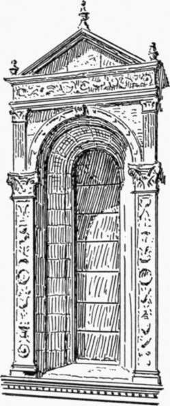

Church Architecture Of The Renaissance In North Italy. Part 4
Description
This section is from the book "Character Of Renaissance Architecture", by Charles Herbert Moore. Also available from Amazon: Character of Renaissance Architecture.
Church Architecture Of The Renaissance In North Italy. Part 4
The ornaments of these openings are composed in a manner which appears to be peculiar to this region. The portal. (Fig. 82) of the south side, for instance, has the mediaeval scheme of a shafted round arch of two orders reproduced in neo-classic details, with an entablature for a lintel passing through the imposts, and another entablature with a pediment placed over the crown of the arch on spandrels in relief. To associate the entablature with the arch in any way is unreasonable, but to put one entablature under the arch and another one over it in this manner is childish composition. Yet illogical and puerile as the scheme is, I believe it is derived from a common form of Lombard Romanesque porch which is entirely reasonable in design. A comparison of this portal with the porch of San Zeno of Verona (Fig. 83) will illustrate this. In San Zeno we have a sheltering porch and a portal, and each is reasonable in itself, while they are equally reasonable in combination. But if the porch were eliminated, with exception of its fagade, and this fagade were drawn back into the plane of the wall, so as merely to frame in the portal, the result would resemble, in composition of lines, the portal of Como, and would be as illogical. The first, or encompassing, order of the portal of Como is like the fagade of such a mediaeval porch wrought in relief against the wall as an ornamental framework. For the Lombard columns the Renaissance designer has substituted pilasters, for the plain lintel an entablature, and for the mediaeval gable a classic pediment with an entablature.
Fig. 82. — Portal of Como.
Fig. 83. — Porch of San Zeno, Verona.
A curious instance of a somewhat similar composition of lines in a Lombard Romanesque portal without an overhanging porch occurs in the fagade of the San Pietro in Cielo d' Oro in Pavia (Fig. 84). Here the arched opening is flanked by tall engaged shafts which carry a narrow string course surmounted by a gable over the crown of the arch, while another string course, on short colonnettes resting on the capitals of the larger shafts, passes over the apex of the gable. But in this case it is only the childish association of members without structural meaning that offends the eye. There is no introduction of forms, like the classic pilasters and entablatures of the portal of Como, that are foreign to the architectural system.
Fig. 84. — Portal of San Pietro in Cielo d' Oro, Pavia.
This scheme, with various modifications, became a characteristic one in the Lombard and Venetian Renaissance, and was extensively applied to windows, as in the nave of the same cathedral of Como. The windows of this nave are splayed, and are flanked with pilasters from the capitals of which their archivolts spring, while in some of them diminutive pilasters rise from the same capitals and carry an entablature and pediment over the crown of the arch (Fig. 85). A variety of forms occur in these openings of the cathedral of Como, like so many experiments in fanciful composition without any basis of reason. The window, for instance, of the bay adjoining that here represented, seems to show that the designer felt dissatisfied with the small pilaster set upon the larger one, and accordingly omitted it, a moulding on the edge of the spandrel, profiled like the lower member of the crowning entablature, taking its place. But again, as if he now felt that the entablature required a more architectural support, he has in another window reproduced the small pilaster, but instead of a large single one below he has employed two narrow ones, thus giving separate support to the arch and the entablature. The doorway on the north side of the nave presents a further modification of the scheme. Here the jambs and the arch are splayed as before, and a tall column of the ornamental tapering form, already noticed in the windows of the Certosa of Pavia and in the chapel of St. Peter Martyr, is set on either side of the composition. This portal, like the one on the south side, has two entablatures with an arch between, and these columns reach to the upper entablature of which they carry ressauts. No great pediment crowns this doorway, but a tall niche, framed in with an order of diminutive pilasters and surmounted with a small pediment, rises over the centre of the upper entablature. This niche shelters a statue of the Virgin, and is flanked by a statue on either side. Many variants of this ornamental scheme for door and window occur in Lombardy and Venice, and it was reproduced in many other parts of Italy, occurring, as we have seen, even in Rome as in the palace of the Cancelleria and the Palazzo Torlonia.
Fig. 85. — Window of nave of Como.
In the fifteenth century, as in the Middle Ages, the architecture of each principal locality developed peculiarities of style in accordance with its peculiar tastes and conditions. Thus the Renaissance design of Venice has a general character of its own, though it drew some of its materials from Florentine and Lombard sources. Michelozzi had followed the exiled Cosimo de' Medici to Venice, and Vasari tells us1 that he made there many drawings and models for private dwellings and public buildings. On the other hand a family of architects and sculptors from Lombardy, known as the Lombardi (Pietro Lombardo and two sons, Santo and Tullio), had come to Venice in the fifteenth century and introduced features from the Lombard Renaissance.
Among the churches of the Venetian Renaissance San Zaccaria is one of the earliest, and its interior exhibits a singular mixture of those mediaeval and pseudo-classic forms of which the Italian architects produced such an astonishing variety. To an apse with a half dome and pseudo-Gothic substructure is joined a nave of three square bays, the first of which is covered with a dome on pendentives, while each of the others has a plain groined vault. These vaults spring from an entablature which crowns the great arcade, and is returned on the ends of the building, with ressauts on corbels at the imposts. The aisles have oblong groined vaults on pointed transverse arches springing from corbels on the wall side, and tied with iron rods. The main proportions conform with those of the so-called Italian Gothic churches, the great arcades of the nave, and consequently the aisle vaulting, being relatively very high. The most singular feature of this interior is the column (Fig. 86) of nondescript character, and a variant of the tapering Lombard Renaissance shaft of Pavia and Como. It consists of a shaft of pseudo-Corinthian form raised on a high octagonal pedestal, with a very wide and richly moulded base.
1 Op. cit., vol. 2, p. 434.
Continue to:
- prev: Church Architecture Of The Renaissance In North Italy. Part 3
- Table of Contents
- next: Church Architecture Of The Renaissance In North Italy. Part 5